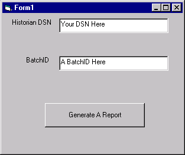

New report sample code
Code associated with Step 1
' Force us to properly define variables. Option Explicit '/// '/// Define the global variables. '/// ' In order to have type 'Database' and other DAO types defined properly, you have ' to select Project >> References from the VB menu above and scroll down ' through the selections to the Microsoft DAO 3.51 Object Library and check it. Dim myDB As Database ' In order to have type 'Word.Application' defined properly, you have ' to select Project >> References from the VB menu above and scroll down ' through the selections to the Microsoft Word 8.0 Object Library and check it. Dim appWD As Word.Application Public CurrentReport As Word.Document 'Word.Documents Dim HistDSN As String ' Entered Historian DSN Dim UserBatchID As String ' Entered batchID to generate a report for ' Some data for a batch as a demo printout Dim uniqueID() As String ' Unique for each batch Dim Recipe As String ' The recipe used for the batch Dim Formula As String ' The formula used for the batch Dim StartTime As String ' Batch Start Dim EndTime As String ' Batch End ' Define a type that holds various information about a parameter Private Type Parameter Name As String Value As String ChangedValue As String End Type ' Now set up an array of this user-defined type Dim Parameters() As Parameter
Form associated with Step 2

Code associated with Steps 3-9
Private Sub Command1_Click() Dim BatchCount As Integer ' We need to do the following to generate a report: ' 1) Read the user's entries ReadUserEntries ' 2) Connect to a historian using the DSN ConnectToHistorian ' 3) Check for the BatchID and uniqueID(s) using SQL to query If (CheckForBatchID) Then 'Do all the uniqueIDs found For BatchCount = 0 To UBound(uniqueID) - 1 ' 4) Open a WORD document for our output OpenWORDDocument ' 5) Read some batch data using SQL - need UniqueID to access this ReadBatchData (uniqueID(BatchCount)) ' 6) Format and output the data to WORD OutputBatchData (uniqueID(BatchCount)) ' 7) Save the report SaveReport (BatchCount) Next Else 'Didn't find the user's BatchID MsgBox "No matching batchID found.", vbOKOnly End If ' Wind down gracefully Set myDB = Nothing End End Sub ' ' 1) Get user inputs from the form ' This can be expanded to populate a listbox with batchids, DSNs, etc. ' Sub ReadUserEntries() HistDSN = Text1.Text UserBatchID = Text2.Text End Sub ' ' 2) Connect to a historian using the DSN ' Sub ConnectToHistorian() Dim sDAOConnect As String On Error GoTo HandleError ' Construct a connection string using the main database and the DSN sDAOConnect = "ODBC;DATABASE=DVHisDB;DSN=" & HistDSN ' Connect up Set myDB = DBEngine.Workspaces(0).OpenDatabase("", 0, True, sDAOConnect) Exit Sub HandleError: HandleError End Sub ' ' 3) Check for the BatchID(s) using SQL to query ' Note that a batchID can be duplicated, so we get ALL unique IDs. ' Function CheckForBatchID() As Boolean Dim SQLQuery As String Dim myRS As Recordset Dim currentID As Integer On Error GoTo HandleError ' Construct a query from the batchview for unique IDs SQLQuery = "SELECT uniqueid FROM batchview WHERE BatchID='" & UserBatchID & "'" ' Get a Recordset with desired data from the database Set myRS = myDB.OpenRecordset(SQLQuery, dbOpenSnapshot, dbReadOnly) ' Make sure there is at least one ID If Not myRS.EOF Then myRS.MoveLast myRS.MoveFirst ' Initialize the array and counter for the loop ReDim uniqueID(0) currentID = 0 ' Loop through all the IDs found, saving them in the array ' The array size is increased for each one (keeping the old ones) While Not myRS.EOF currentID = UBound(uniqueID) ReDim Preserve uniqueID(currentID + 1) uniqueID(currentID) = myRS.Fields("uniqueid") currentID = currentID + 1 myRS.MoveNext Wend CheckForBatchID = True Else CheckForBatchID = False End If ' Clean Up myRS.Close Set myRS = Nothing Exit Function HandleError: HandleError End Function ' ' 4) Open a WORD document for our output ' A more detailed version of this is found in the BatchReport sourcecode ' Sub OpenWORDDocument() ' Start or link to Word Dim tempWord As Word.Application Dim start As Long Err.Number = 0 ' If word is running we can link to it (Err.Number = 0), but ' either way we continue down below the 'notLoaded:' line On Error GoTo notLoaded Set appWD = GetObject(, "Word.application.8") notLoaded: ' If didn't find an instance of Word, create one If Err.Number = 429 Then ' Create a temporary instance of word and then delete it after ' creating the real one. This is necessary to ensure that a user doesn't ' get control of the copy of Word reserved for the Batch Report ' Ref: Microsoft Tech Support Q188546 On Error GoTo HandleError ' An error creating will end the program Set tempWord = CreateObject("Word.Application.8") Set appWD = CreateObject("Word.Application.8") tempWord.Quit Set tempWord = Nothing End If Exit Sub HandleError: HandleError End Sub ' ' 5) Read some batch data using SQL ' Sub ReadBatchData(uniqueID As String) Dim SQLQuery As String Dim myRS As Recordset Dim sDate As Date Dim eDate As Date Dim FirstDate As Date Dim LastDate As Date Dim parminx As Integer On Error GoTo HandleError '///////////////////// ' Read the Batch Start/End Times and Recipe from batchview SQLQuery = "SELECT starttime, endtime, Recipe FROM batchview _ WHERE uniqueid='" & uniqueID & "'" Set myRS = myDB.OpenRecordset(SQLQuery, dbOpenSnapshot, dbReadOnly) ' Put the times into their variables - should only be one record If Not myRS.EOF Then sDate = myRS.Fields("starttime") eDate = myRS.Fields("endtime") ' Check for Batch Start after Default start time (1/1/1980) FirstDate = "1/2/1980" ' Note that locale settings affect the default If sDate < FirstDate Then StartTime = "<Default Batch Start Time>" ' The batch has not been started Else StartTime = sDate End If ' Check for Batch End before Default end time (1/1/2035) LastDate = "12/31/2034" ' Note that locale settings affect the default If eDate > LastDate Then EndTime = "<Default Batch End Time>" ' The batch has not ended Else EndTime = eDate End If ' Save the Recipe name Recipe = myRS.Fields("Recipe") Else ' No data available StartTime = "Not Available" EndTime = "Not Available" Recipe = "Not Available" End If ' Clean up before starting next query myRS.Close Set myRS = Nothing '///////////////////// ' Read the Batch Formula and Parameters from batchformulaview SQLQuery = "SELECT DISTINCT * FROM batchformulaview _ WHERE uniqueid='" & uniqueID & "'" Set myRS = myDB.OpenRecordset(SQLQuery, dbOpenSnapshot, dbReadOnly) ReDim Parameters(0) If Not myRS.EOF Then myRS.MoveLast myRS.MoveFirst ' Get the formula from the first record Formula = myRS.Fields("formula") ' Save all the parameter information in the array ReDim Parameters(myRS.RecordCount) For parminx = 0 To myRS.RecordCount - 1 Parameters(parminx).Name = myRS.Fields("valuename") Parameters(parminx).Value = myRS.Fields("value") ' Null string can cause an error If Not IsNull(myRS.Fields("change")) Then Parameters(parminx).ChangedValue = myRS.Fields("change") Else Parameters(parminx).ChangedValue = "" End If myRS.MoveNext Next End If Exit Sub HandleError: HandleError End Sub Sub OutputBatchData(uniqueID As String) ' A table for nicer output Dim ParamTable As Word.Table Dim paraminx As Integer ' Make MSWORD visible appWD.Visible = True ' Maximize the Word window and then minimize it to get ' a full window when accessing it appWD.WindowState = wdWindowStateMaximize appWD.WindowState = wdWindowStateMinimize ' Create new report document appWD.Documents.Add Set CurrentReport = appWD.ActiveDocument ' Print the collected data With appWD.Selection .Font.Name = "arial" .Font.Size = 12 .TypeParagraph .TypeText Text:="BatchID: " & UserBatchID .TypeParagraph .TypeText Text:="UniqueID: " & uniqueID .TypeParagraph .TypeParagraph .TypeText Text:="Formula: " & Formula .TypeParagraph .TypeText Text:="Recipe: " & Recipe .TypeParagraph .TypeParagraph If UBound(Parameters) > 0 Then Set ParamTable = CurrentReport.Tables.Add(Range:= _ appWD.Selection.Range, NumRows:=UBound(Parameters), _ NumColumns:=3) ' Set up the column sizes to match heading text ParamTable.Columns(1).Width = appWD.InchesToPoints(2.5) ParamTable.Columns(2).Width = appWD.InchesToPoints(1.5) ParamTable.Columns(3).Width = appWD.InchesToPoints(1.5) ' Add the heading text .TypeText Text:="Parameter Name" .MoveRight Unit:=wdCell .TypeText Text:="Parameter Value" .MoveRight Unit:=wdCell .TypeText Text:="Changed Value" .MoveRight Unit:=wdCell ' Loop through all parameters ' Note that MoveRight three times ends up on the next line For paraminx = 0 To UBound(Parameters) - 1 .TypeText Text:=Parameters(paraminx).Name .MoveRight Unit:=wdCell .TypeText Text:=Parameters(paraminx).Value .MoveRight Unit:=wdCell .TypeText Text:=Parameters(paraminx).ChangedValue .MoveRight Unit:=wdCell Next Set ParamTable = Nothing End If End With End Sub Sub SaveReport(FileNumber As Integer) Dim FileName As String ' Users are most likely to expect File1, File2, File3, etc. FileNumber = FileNumber + 1 ' Save each unique report in a different file FileName = "C:\" & UserBatchID & "_" & FileNumber & ".doc" CurrentReport.SaveAs FileName:=FileName End Sub ' ' Generic routine for trapping errors. Exits after notifying user. ' Sub HandleError() HandleError: Dim strError As String Dim errLoop As Error ' Enumerate Errors collection and display properties of each Error object. For Each errLoop In Errors With errLoop strError = "Error #" & .Number & vbCr strError = strError & "Description: " & .Description & vbCr strError = strError & "Source: " & .Source & vbCr End With MsgBox strError, vbOKOnly, "Error Occurred" Next ' Shutdown and release the DB Set myDB = Nothing End End Sub